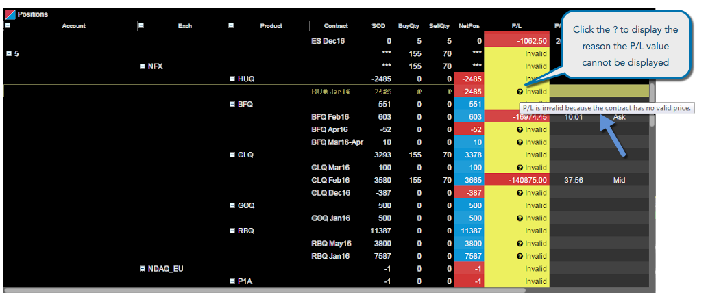

In general, your P/L is calculated using your incoming or start of day (SOD) positions, which use the settlement price from the previous session, your exchange fills from the current session, and any administrative fills. When the market is open, the P/L for all open positions is calculated using the P/L price type that you've selected in the Positions widget settings. If the market is closed, open P/L is calculated using settlement or closing prices.
Note: You can enable the Use indicative settle price when available setting if you want the P/L calculations to use the indicative settlement prices instead of the settlement prices.
You can select how P/L is calculated for your open positions by selecting a price type in the P/L Calculation setting in the Positions widget. The selected price type option appears in the P/L Price Type column. This column is hidden in the Positions widget by default, and can be shown using the context menu settings.
If you select the LTP Waterfall method of calculating P/L, then TT uses the Last
Traded Price (LTP) to calculate P/L and automatically switches to a waterfall logic to select other price types if LTP is not available or is not the best indicator of the current market for an illiquid instrument. When using a method other than the LTP Waterfall and the user's selected price type does not exist, then the waterfall logic is not followed and P/L is displayed as Invalid.
When the LTP Waterfall option is selected for the P/L Calculation setting, TT chooses the first available price in the following order:
- Last — If the LTP, Bid, and Ask prices are available, then TT checks if the LTP is valid (within the Bid/Ask range), meaning LTP >= Bid, and LTP <= Ask. If the LTP is within this range, then LTP is used as the P/L price.
- Midpoint — If LTP is not valid (outside the Bid/Ask range), TT uses the midpoint price to calculate P/L. The Bid and Ask prices must be available to calculate the midpoint. If they 're available, then the midpoint (i.e., (Bid + Ask)/2) is used as the P/L price.
- Last Bid — If the LTP and Bid (but not the Ask) are available, then TT uses LTP if the LTP >= Bid as the P/L price; otherwise, it uses the Bid.
- Last Ask — If the LTP and Ask (but not the Bid) are available, then TT uses LTP if the LTP <= Ask as the P/L price; otherwise, it uses the Ask.
- Last only — If only the LTP is available, then TT uses LTP as the P/L price.
- Indicative — If the indicative price is available, then TT uses Indicative as the P/L price.
- Bid/Ask — If only one side is available, i.e., there is only a Bid or only an Ask, and there is also a settlement price, then either the Bid or Ask is used as the P/L price if it's better than the Settle: If no Ask, but Bid > Settle, then Bid is used as the P/L price; if no Bid, but Ask < Settle, then Ask is used as the P/L price.
- Settle — If neither the Bid or Ask are available, then the settlement price is used as the P/L price.
- Close — If Settle is not available, then the Close price of the current session is used to as the P/L price.
The price used by the waterfall logic to calculate P/L appears in the P/L Price Type column.
When P/L cannot be calculated, Position widget displays Invalid with a yellow background. When more information about why the value cannot be calculated is available, a ? is shown in the field. If you hover over the ?, the reason, similar to the following, is displayed:
- "P/L cannot be calculated because the Start-Of-Day (SOD) position does not have a valid price"
- "P/L cannot be calculated because market data is not enabled for that contract"
- "P/L cannot be calculated because the point value for this contract is not available"
